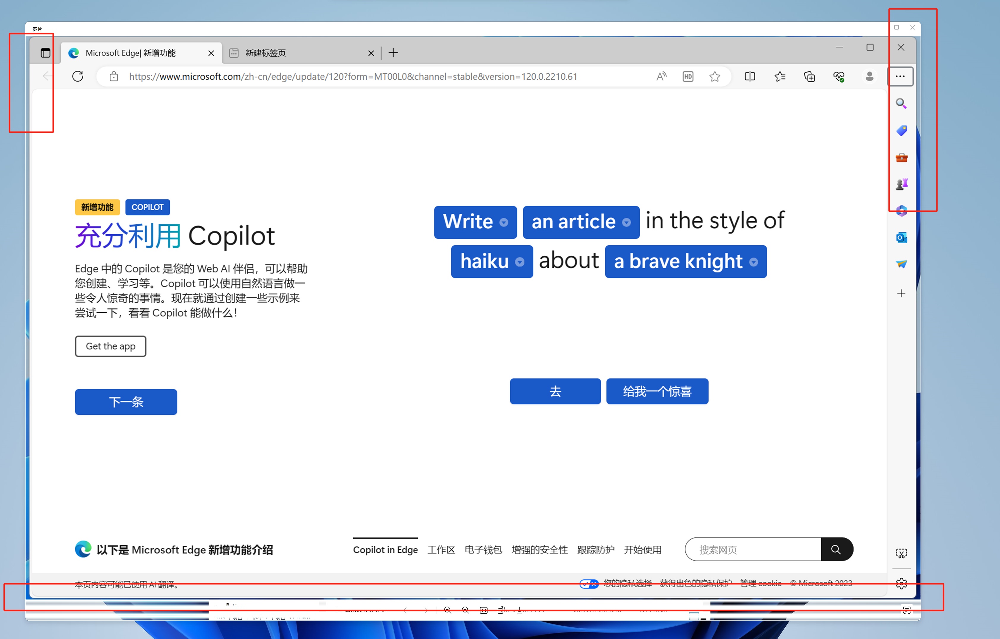

现象
win8之后操作系统会给窗口设置左、右、下三个方向上的”透明边缘”:

当我们调用getclientRect函数时, 系统返回的窗口区域包含”透明边缘’, 并且Bitblt函数也会把这部分区域包含进去。
解决办法
if (rtc::rtc_win::GetVersion() >= rtc::rtc_win::Version::VERSION_WIN8 ||
is_maximized) {
// Only apply this cropping to windows with a resize border (otherwise,
// it'd clip the edges of captured pop-up windows without this border).
LONG style = GetWindowLong(window, GWL_STYLE);
if (style & WS_THICKFRAME || style & DS_MODALFRAME) {
int width = GetSystemMetrics(SM_CXSIZEFRAME);
int bottom_height = GetSystemMetrics(SM_CYSIZEFRAME);
const int visible_border_height = GetSystemMetrics(SM_CYBORDER);
int top_height = visible_border_height;
// If requested, avoid cropping the visible window border. This is used
// for pop-up windows to include their border, but not for the outermost
// window (where a partially-transparent border may expose the
// background a bit).
if (avoid_cropping_border) {
width = std::max(0, width - GetSystemMetrics(SM_CXBORDER));
bottom_height = std::max(0, bottom_height - visible_border_height);
top_height = 0;
}
cropped_rect->Extend(-width, -top_height, -width, -bottom_height);
}
}
上面这段代码会误判部分窗口(vs2022\vscode\wechat)，再通过下面的方式规避:
RECT frame;
auto hr = DwmGetWindowAttribute(window, DWMWA_EXTENDED_FRAME_BOUNDS, &frame,
sizeof(RECT));
if (hr == S_OK) {
// it/s means the window has no transparent borders;
if (frame.left == window_rect.left()) {
return true;
}
}